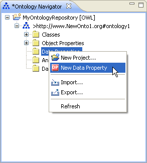
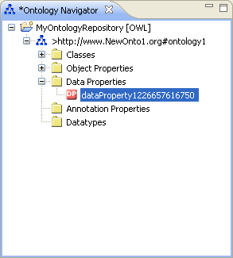
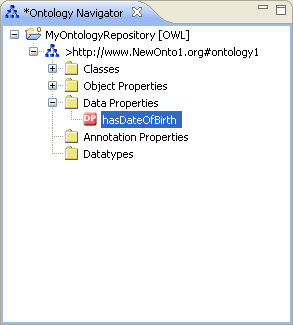

Create a Datatype Property
To create a datatype property, proceed as follows:
- Select an ontology.
- Select the Data Properties folder.
Right-click the Data Properties folder and select New Data Property.

- Rename the datatype property.
The datatype property will be created with an automatically generated name.
Rename the datatype property by changing its name in the Ontology Navigator.

- Press Return.
The datatype property will be renamed.

Note – Alternatively, you can rename the datatype property by changing its URI in the Entity Properties panel.
- Edit the datatype property.
The newly created datatype property will be displayed in the Entity Properties panel.
You can now continue to specify the characteristics of the datatype property.
For more information, see
OWL Datatypes Properties.